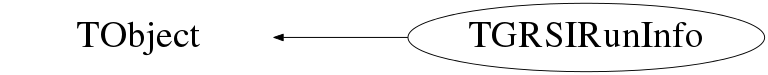

Function Members (Methods)
public:
| TGRSIRunInfo() | |
| TGRSIRunInfo(const TGRSIRunInfo&) | |
| virtual | ~TGRSIRunInfo() |
| void | TObject::AbstractMethod(const char* method) const |
| virtual void | TObject::AppendPad(Option_t* option = "") |
| virtual void | TObject::Browse(TBrowser* b) |
| static TClass* | Class() |
| virtual const char* | TObject::ClassName() const |
| virtual void | Clear(Option_t* opt = "") |
| virtual TObject* | TObject::Clone(const char* newname = "") const |
| virtual Int_t | TObject::Compare(const TObject* obj) const |
| virtual void | TObject::Copy(TObject& object) const |
| static bool | CSM() |
| static bool | Dante() |
| virtual void | TObject::Delete(Option_t* option = "")MENU |
| static bool | Descant() |
| virtual Int_t | TObject::DistancetoPrimitive(Int_t px, Int_t py) |
| virtual void | TObject::Draw(Option_t* option = "") |
| virtual void | TObject::DrawClass() constMENU |
| virtual TObject* | TObject::DrawClone(Option_t* option = "") constMENU |
| virtual void | TObject::Dump() constMENU |
| virtual void | TObject::Error(const char* method, const char* msgfmt) const |
| virtual void | TObject::Execute(const char* method, const char* params, Int_t* error = 0) |
| virtual void | TObject::Execute(TMethod* method, TObjArray* params, Int_t* error = 0) |
| virtual void | TObject::ExecuteEvent(Int_t event, Int_t px, Int_t py) |
| virtual void | TObject::Fatal(const char* method, const char* msgfmt) const |
| virtual TObject* | TObject::FindObject(const char* name) const |
| virtual TObject* | TObject::FindObject(const TObject* obj) const |
| static TGRSIRunInfo* | Get() |
| virtual Option_t* | TObject::GetDrawOption() const |
| static Long_t | TObject::GetDtorOnly() |
| virtual const char* | TObject::GetIconName() const |
| virtual const char* | TObject::GetName() const |
| static int | GetNumberOfSystems() |
| virtual char* | TObject::GetObjectInfo(Int_t px, Int_t py) const |
| static Bool_t | TObject::GetObjectStat() |
| virtual Option_t* | TObject::GetOption() const |
| virtual const char* | TObject::GetTitle() const |
| virtual UInt_t | TObject::GetUniqueID() const |
| static bool | Griffin() |
| virtual Bool_t | TObject::HandleTimer(TTimer* timer) |
| virtual ULong_t | TObject::Hash() const |
| virtual void | TObject::Info(const char* method, const char* msgfmt) const |
| virtual Bool_t | TObject::InheritsFrom(const char* classname) const |
| virtual Bool_t | TObject::InheritsFrom(const TClass* cl) const |
| virtual void | TObject::Inspect() constMENU |
| void | TObject::InvertBit(UInt_t f) |
| virtual TClass* | IsA() const |
| virtual Bool_t | TObject::IsEqual(const TObject* obj) const |
| virtual Bool_t | TObject::IsFolder() const |
| Bool_t | TObject::IsOnHeap() const |
| virtual Bool_t | TObject::IsSortable() const |
| Bool_t | TObject::IsZombie() const |
| virtual void | TObject::ls(Option_t* option = "") const |
| static string | MajorIndex() |
| void | TObject::MayNotUse(const char* method) const |
| static string | MinorIndex() |
| virtual Bool_t | TObject::Notify() |
| void | TObject::Obsolete(const char* method, const char* asOfVers, const char* removedFromVers) const |
| static void | TObject::operator delete(void* ptr) |
| static void | TObject::operator delete(void* ptr, void* vp) |
| static void | TObject::operator delete[](void* ptr) |
| static void | TObject::operator delete[](void* ptr, void* vp) |
| void* | TObject::operator new(size_t sz) |
| void* | TObject::operator new(size_t sz, void* vp) |
| void* | TObject::operator new[](size_t sz) |
| void* | TObject::operator new[](size_t sz, void* vp) |
| TGRSIRunInfo& | operator=(const TGRSIRunInfo&) |
| static bool | Paces() |
| virtual void | TObject::Paint(Option_t* option = "") |
| virtual void | TObject::Pop() |
| void | Print(Option_t* opt = "") |
| virtual Int_t | TObject::Read(const char* name) |
| virtual void | TObject::RecursiveRemove(TObject* obj) |
| void | TObject::ResetBit(UInt_t f) |
| static bool | Rf() |
| static int | RunNumber() |
| static bool | S3() |
| virtual void | TObject::SaveAs(const char* filename = "", Option_t* option = "") constMENU |
| virtual void | TObject::SavePrimitive(ostream& out, Option_t* option = "") |
| static bool | Sceptar() |
| static void | SetAnalysisTreeBranches(TTree*) |
| void | TObject::SetBit(UInt_t f) |
| void | TObject::SetBit(UInt_t f, Bool_t set) |
| static void | SetCSM(bool flag = true) |
| static void | SetDante(bool flag = true) |
| static void | SetDescant(bool flag = true) |
| virtual void | TObject::SetDrawOption(Option_t* option = "")MENU |
| static void | TObject::SetDtorOnly(void* obj) |
| static void | SetGriffin(bool flag = true) |
| static void | SetInfoFromFile(TGRSIRunInfo* temp) |
| static void | SetMajorIndex(const char* tmpstr) |
| static void | SetMinorIndex(const char* tmpstr) |
| static void | TObject::SetObjectStat(Bool_t stat) |
| static void | SetPaces(bool flag = true) |
| static void | SetRf(bool flag = true) |
| static void | SetRunInfo(int runnum = 0, int subrunnum = -1) |
| static void | SetRunNumber(int tmp) |
| static void | SetS3(bool flag = true) |
| static void | SetSceptar(bool flag = true) |
| static void | SetSharc(bool flag = true) |
| static void | SetSpice(bool flag = true) |
| static void | SetSubRunNumber(int tmp) |
| static void | SetTigress(bool flag = true) |
| static void | SetTip(bool flag = true) |
| static void | SetTriFoil(bool flag = true) |
| virtual void | TObject::SetUniqueID(UInt_t uid) |
| static void | SetZeroDegree(bool flag = true) |
| static bool | Sharc() |
| virtual void | ShowMembers(TMemberInspector&) |
| static bool | Spice() |
| virtual void | Streamer(TBuffer&) |
| void | StreamerNVirtual(TBuffer& ClassDef_StreamerNVirtual_b) |
| static int | SubRunNumber() |
| virtual void | TObject::SysError(const char* method, const char* msgfmt) const |
| Bool_t | TObject::TestBit(UInt_t f) const |
| Int_t | TObject::TestBits(UInt_t f) const |
| static bool | Tigress() |
| static bool | Tip() |
| static bool | TriFoil() |
| virtual void | TObject::UseCurrentStyle() |
| virtual void | TObject::Warning(const char* method, const char* msgfmt) const |
| virtual Int_t | TObject::Write(const char* name = 0, Int_t option = 0, Int_t bufsize = 0) |
| virtual Int_t | TObject::Write(const char* name = 0, Int_t option = 0, Int_t bufsize = 0) const |
| static bool | ZeroDegree() |
protected:
| virtual void | TObject::DoError(int level, const char* location, const char* fmt, va_list va) const |
| void | TObject::MakeZombie() |
Data Members
public:
| enum TObject::EStatusBits { | kCanDelete | |
| kMustCleanup | ||
| kObjInCanvas | ||
| kIsReferenced | ||
| kHasUUID | ||
| kCannotPick | ||
| kNoContextMenu | ||
| kInvalidObject | ||
| }; | ||
| enum TObject::[unnamed] { | kIsOnHeap | |
| kNotDeleted | ||
| kZombie | ||
| kBitMask | ||
| kSingleKey | ||
| kOverwrite | ||
| kWriteDelete | ||
| }; |
private:
| bool | fCSM | |
| bool | fDante | |
| bool | fDescant | |
| static TGRSIRunInfo* | fGRSIRunInfo | |
| bool | fGriffin | |
| string | fMajorIndex | |
| string | fMinorIndex | |
| int | fNumberOfTrueSystems | |
| bool | fPaces | |
| bool | fRf | |
| int | fRunNumber | |
| bool | fS3 | |
| bool | fSceptar | |
| bool | fSharc | |
| bool | fSpice | |
| int | fSubRunNumber | |
| bool | fTigress | |
| bool | fTip | |
| bool | fTriFoil | |
| bool | fZeroDegree |
Class Charts
{kind=link}
{kind=link}
{kind=link}
{kind=link}

Function documentation
TGRSIRunInfo * Get()
void SetInfoFromFile(TGRSIRunInfo* temp)
void SetRunInfo(int runnum = 0, int subrunnum = -1)
void SetAnalysisTreeBranches(TTree* )
TGRSIRunInfo()
root forces me have this here instead of a private class member in order to write this class to a tree. pcb.